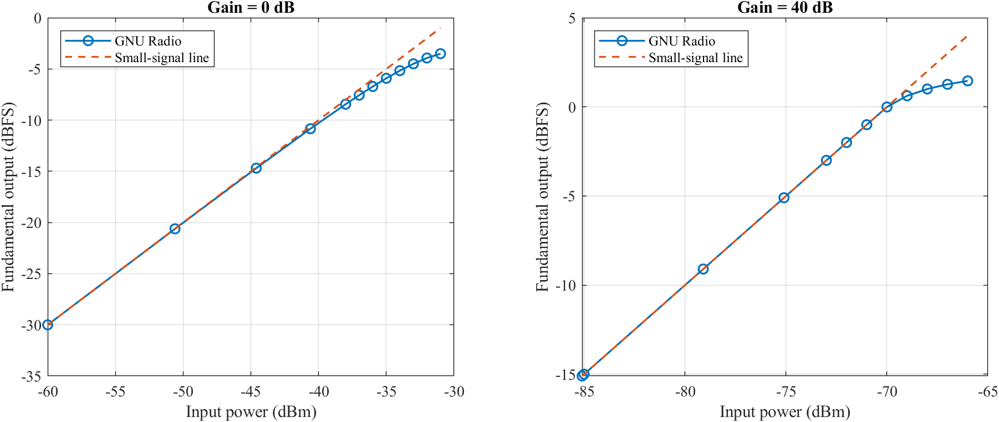
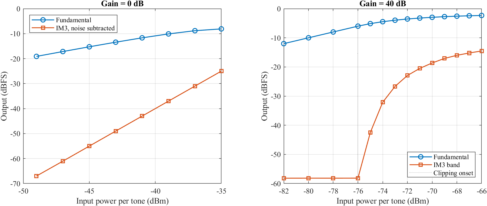
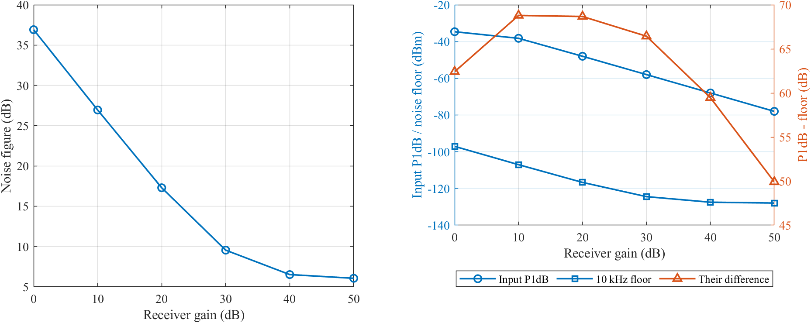
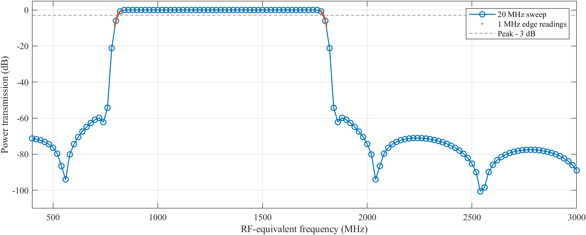

Group 6
Noise figure measures the loss of signal-to-noise ratio. In the Y-factor method, gain and bandwidth cancel in the on/off power ratio. IIP3 predicts the third-order products from the extended small-signal lines.
Noise temperatures for NF of 1, 3, 6 and 10 dB are 75.088, 288.626, 864.511 and 2610 K. The chain noise figure is 2.741308 dB with the amplifier first and 4.945568 dB with the filter first. Derivations of the Y-factor relation, error sensitivity, third-order relations and SFDR are in the PDF.
For NF near 7 and 30 dB, ENR is 15 and 35 dB. We average for at least 0.1 s. Tones at 300 and 400 kHz give products at 200 and 500 kHz. The chosen power at zero gain is -43 dBm per tone. The hardware limit is -10 dBm total power.
| Gain (dB) | NF (dB) | P1dB (dBm) | 10 kHz floor (dBm) | Gap (dB) |
|---|---|---|---|---|
| 0 | 36.910 | -34.656 | -97.070 | 62.414 |
| 10 | 26.944 | -38.244 | -107.036 | 68.793 |
| 20 | 17.290 | -48.015 | -116.690 | 68.675 |
| 30 | 9.545 | -57.998 | -124.435 | 66.437 |
| 40 | 6.513 | -67.997 | -127.467 | 59.469 |
| 50 | 6.055 | -78.011 | -127.925 | 49.914 |
The largest gap among the requested gains is 68.793 dB at gain 10 dB. IIP3 is -24.99 dBm and the product slope is 3.0095. At gain 40 dB, ADC clipping causes the sudden product increase.



The original program gives fL = 808.43 MHz, fH = 1791.57 MHz and BW = 983.14 MHz. The seller lists 2400 to 2500 MHz. Other band limits are not stated.

For NF = 7 dB and ENR = 15 dB, Y = 8.639 dB. A matched 10 dB attenuator at the reference temperature adds 10 dB to the chain noise figure. A 2 dB rise per tone gives a 6 dB product rise in the third-order region. Receiver-specific predictions remain unset because the hardware model and assigned gain have not been announced.
Excess input power: calculate the total level and use enough attenuation. Invalid Y readings: turn AGC off, fix the gain and avoid compression. False IIP3: check the product slope and the two-tone source.